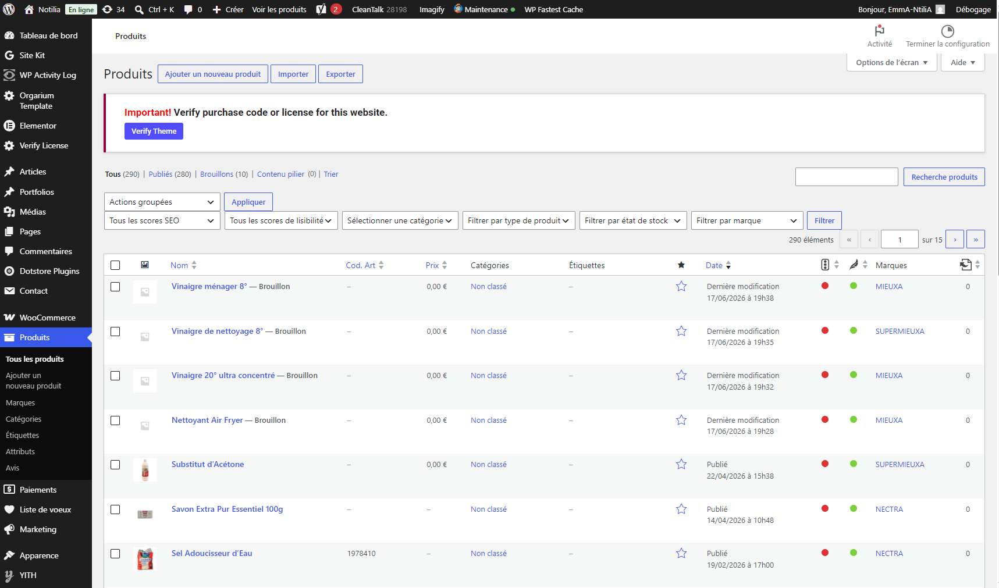
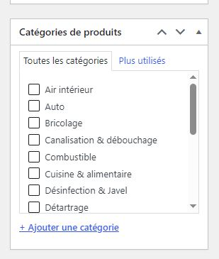
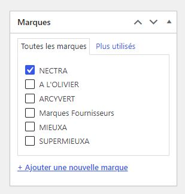
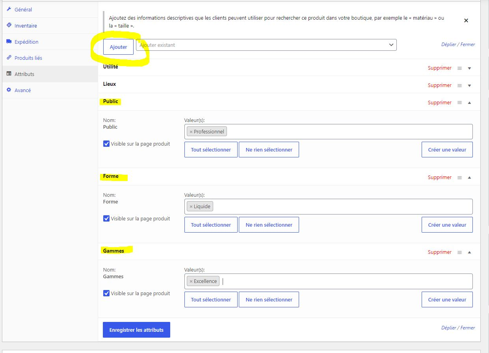
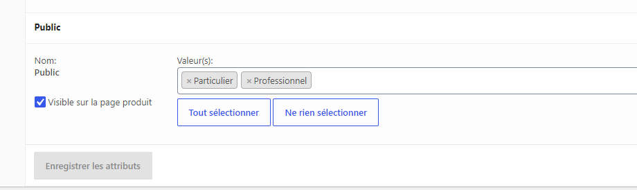
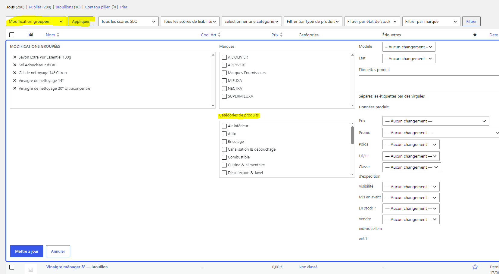
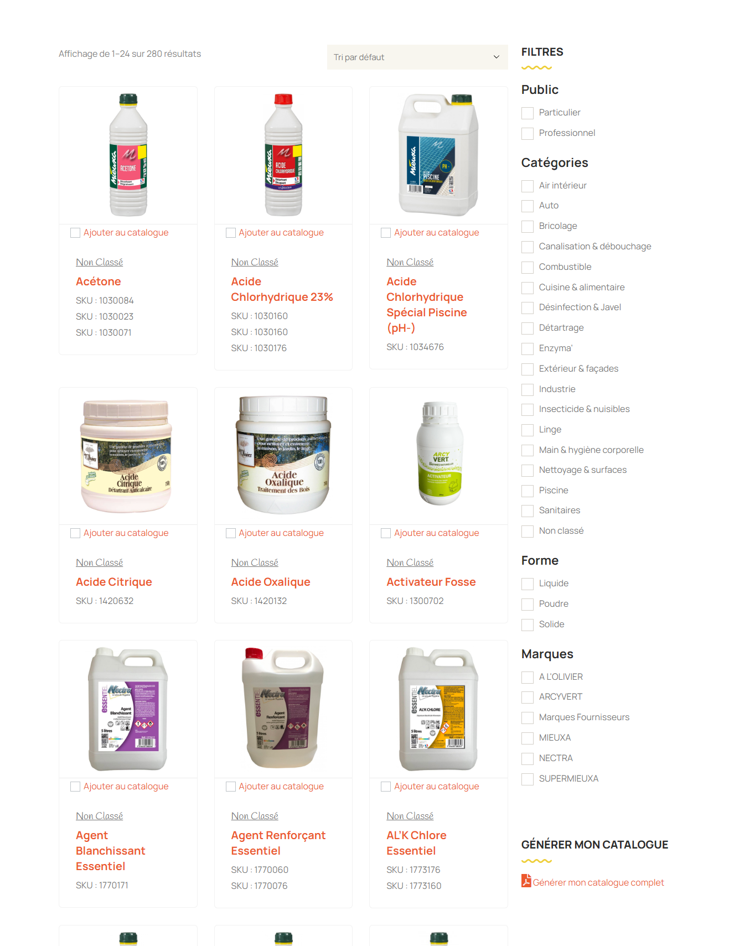

Tutoriel maintenanceMettre à jour les produits dans WordPress
APPO · pour NOTILIA
Mettre à jour les produits dans WordPress
Comment ranger les produits existants selon la nouvelle arborescence · WooCommerce · juin 2026
Ce guide explique, étape par étape, comment mettre à jour les produits déjà en ligne
pour qu'ils suivent la nouvelle structure. Il ne s'agit pas de créer de nouveaux produits, mais de
re-ranger l'existant : leur donner la bonne catégorie, la bonne marque, et renseigner les
bons attributs (Public, Forme, Gamme) qui servent désormais de filtres sur le site.
Ce qui change, en une phrase
Avant, on naviguait par marque puis par gamme sur plusieurs niveaux. Désormais,
un seul niveau de navigation : la catégorie. Tout le reste (le public, la marque, la
forme, la gamme) devient un filtre renseigné sur la fiche produit.
Avant
Entrée par marque imposée
4 à 5 niveaux de navigation
Un même besoin éclaté entre marques
Après
Entrée par catégorie (vocabulaire unifié)
2 niveaux : Univers › Catégorie
Marque, forme, gamme, public = filtres
Important : où se renseigne chaque information ?
Sur la fiche produit, ces informations ne sont pas toutes au même endroit :
Information
Où la renseigner
Catégorie
Encart Catégories de produits (colonne de droite)
Marque
Encart Marques (colonne de droite)
Public · Forme · Gamme
Bloc Données produit › onglet Attributs
Le référentiel à garder sous les yeux
Avant de toucher un produit, repérez sa marque et ses attributs. La liste de référence des catégories est celle que vous tenez de votre côté.
La Gamme ne concerne que les produits Pro (Nectra). Pour un produit Particulier, on la laisse vide.
1Ouvrir la liste des produits
Dans le tableau de bord WordPress.
Dans le menu de gauche, cliquez sur Produits › Tous les produits.
Repérez le produit à mettre à jour (la barre Recherche produits en haut à droite aide à le retrouver par son nom).
Survolez son nom et cliquez sur Modifier.

Produits › Tous les produits : la liste de tout le catalogue.
2Corriger la catégorie
À droite de l'écran d'édition, encart Catégories de produits.
Dans l'encart Catégories de produits (colonne de droite), cochez la bonne catégorie (selon votre liste de référence).
Décochez les anciennes catégories qui ne servent plus (anciens libellés, entrées par marque, sous-catégories supprimées).
Objectif : une seule catégorie cochée par produit.

L'encart « Catégories de produits » : une seule case à cocher.
3Choisir la marque
Toujours dans la colonne de droite, encart Marques (juste au-dessus ou en-dessous des catégories).
Dans l'encart Marques, cochez la marque du produit (une seule).
Décochez toute marque qui ne correspond pas.

L'encart « Marques » : une case cochée (ici NECTRA).
4Renseigner les attributs (Public, Forme, Gamme)
Dans le bloc Données produit, onglet Attributs.
Dans le bloc central Données produit, cliquez sur l'onglet Attributs.
Les attributs Public, Forme et Gammes sont déjà présents. Pour chacun, dans Valeur(s), sélectionnez la valeur correspondante (voir le tableau ci-dessus).
Besoin d'ajouter un attribut manquant ? Utilisez Ajouter existant puis choisissez-le dans la liste.
Laissez la case Visible sur la page produit cochée pour que l'info apparaisse sur la fiche.
Cliquez sur Enregistrer les attributs.

Onglet « Attributs » : Public, Forme et Gammes, chacun avec sa ou ses valeurs.
Cas particulier : un produit vendu Pro et Particulier
On ne crée pas de seconde fiche. On garde un seul produit, et dans
l'attribut Public on sélectionne les deux valeurs (Professionnel + Particulier).
Le produit remontera alors automatiquement dans les deux univers. Une seule fiche, une seule maintenance.

Attribut « Public » avec ses deux valeurs : Particulier + Professionnel.
5Enregistrer
Cliquez sur le bouton bleu Mettre à jour en haut à droite.
Le produit est rangé. Passez au suivant.
Le bouton « Mettre à jour » enregistre toute la fiche.
6Gain de temps : modifier plusieurs produits d'un coup
Pour réaffecter la même catégorie ou la même marque à beaucoup de produits.
Dans Produits › Tous les produits, cochez les produits concernés (cases à gauche).
En haut, menu Modification groupée, puis cliquez sur Appliquer.
Dans le panneau qui s'ouvre, ajoutez la catégorie et/ou la marque communes, puis Mettre à jour.
Attention : la modification groupée gère bien catégorie et marque, mais pas les attributs
fins (Public/Forme/Gamme propres à chaque produit) : ceux-là restent à renseigner produit par produit.

La modification groupée : on assigne catégorie et marque à plusieurs produits en une fois.
7Vérifier sur le site
Pour s'assurer que le produit apparaît au bon endroit et répond aux filtres.
Ouvrez le site côté visiteur.
Dans la colonne Filtres, testez Public, Catégories, Forme et Marques : le produit doit apparaître/disparaître correctement.
Le produit doit bien se trouver dans sa catégorie.

Côté site : la colonne de filtres (Public, Catégories, Forme, Marques) reprend tout ce qu'on a renseigné.
Les tests finaux sont assurés de notre côté
Une fois vos produits rangés, nous réalisons les tests finaux pour vérifier
que tout est correct, notamment qu'il n'y a aucun problème d'URL (liens cassés, redirections,
anciennes adresses). Vous n'avez pas à vous en occuper : on valide l'ensemble avant la mise en ligne définitive.
Mémo : à vérifier pour chaque produit
Une seule catégorie cochée, au bon libellé unifié
Anciennes catégories décochées
Marque cochée (une seule) dans l'encart Marques
Public renseigné (et les deux valeurs si vendu Pro + Particulier)
Forme renseignée (Liquide / Poudre / Solide)
Gamme renseignée si produit Pro (sinon laissée vide)